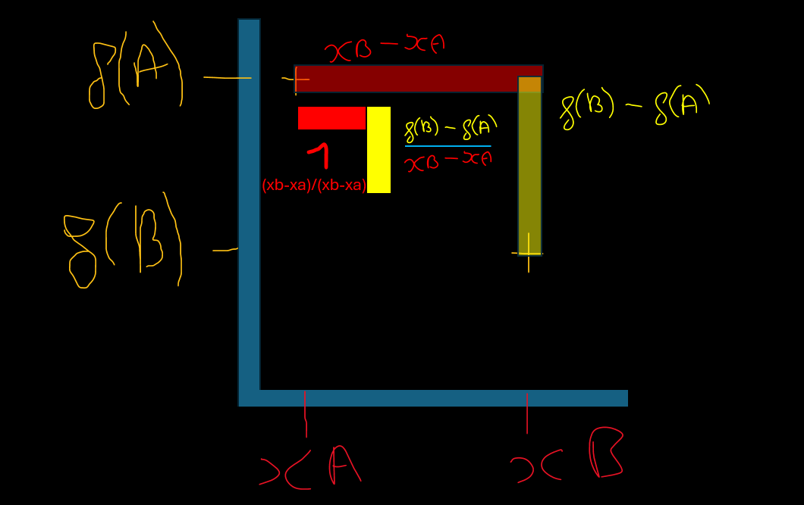
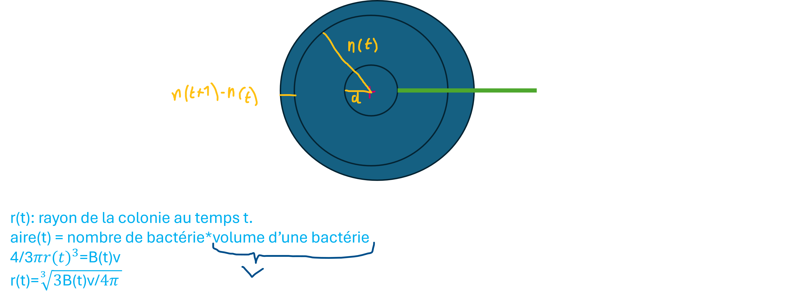
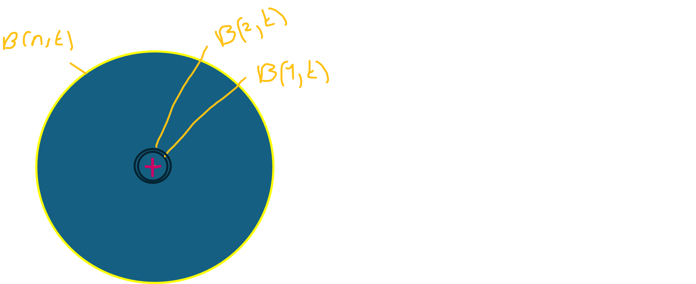

Introduction
Cela vous est probablement déjà arrivés: Vous rentrez des courses, fatigués et, horreur, quelques heures plus tard, vous constatez que vous avez oublié le sac des surgelés. Pouvez-vous consommer les aliments à l'intérieur ?
Pour savoir cela, on va devoir modéliser, et pour modéliser, nous allons être contraints de négliger des paramètres:
Tout d'abord, il faut savoir que le danger des bactéries pathogènes réside dans les toxines qu'elles produisent: Par sélection naturelle, les mutations des bactéries leur conférant la capacité de se transmettre facilement d'un individu à l'autre se sont davantage concervées. Les toxines produites par les bactéries ont souvent cette fonction: provoquer des symptômes afin que l'individu propage plus facilement la bactérie. Ainsi, si par coévolution, nous nous sommes adaptés en développant un système immunitaire stigmatisant ces bactéries pathogènes, le bénéfice de contaminer plus de monde a dominé leur désavantage de se faire neutraliser, c'est pour cela qu'on observe des bactéries pathogènes... Mais en cuisant nos aliments, les bactéries, étant comme nous, constituées en grande partie d'eau pour effectuer la respiration cellulaire, meurent car l'eau s'avapore... Cependant, de nombreuses toxines bactériennes sont thermoactives, c'est à dire qu'elles restent dangereuses même à des températures élevées.
1- Modèle discret simple
Pour commencer, on peut essayer de modéliser le nombre de bactéries générations après générations.
Si on suppose que le nombre de bactéries double à chaque génération, on obtient la relation B(n+1)=2B(n), pour B(n) la quantité de bactéries à la génération n. Donc à la génération n, on aura multiplié le nombre initial de bactéries par 2 n fois successivement: B(n)=B0*2n. On estime que chez certaines bactéries, une génération peut être engendrée toutes les 20 minutes.
Bien, maintenant, entrons dans le vif du sujet: Supposons que chaque bactérie produit α quantité de toxines par minutes. La quantité de toxine PRODUITE à la génération n (notons-la T'(n) ) est donc de B(n)*20α donc de 2nB0*20α. Mais nous cherchons la quantité de toxines TOTALE au temps n, c'est à dire la somme des quantités de toxines produites à chaque génération, de 0 à n+ la quantité initiale de toxine (qui est ici égale à 0).
\(T(n)=\sum_{i=0}^{n}T'(i)\iff T(n)=\sum_{i=0}^{n}2^iB_0 \cdot 20\alpha\iff T(n)=20\alpha B_0 \cdot\sum_{i=0}^{n}2^i\)
Or, en posant S=\(\sum_{i=0}^{n}2^i\), on a:
S-2S=\(\sum_{i=0}^{n}2^i\)-\(\sum_{i=1}^{n+1}2^i\)=(\(\color{blue}2^0+\color{red}\sum_{i=1}^{n}2^i\)) - (\(\color{green}2^{n+1}+\color{red}\sum_{i=1}^{n}2^i\))
Donc \(S-2S=2^0-2^{n+1}\) donc \(\frac {S(1-2)}{1-2} = \frac {2^0-2^{n+1}} {1-2}\) et donc S=\(2^{n+1}-1\)
Donc \(T(n) = 20\alpha B_0 \cdot 2^{n+1}-1\).
On en conclut qu'à la génération n, la quantité de toxines sera de 20αB0(2n+1-1). Le problème est qu'on ne peut calculer la quantité de toxines qu'à des temps multiples de 20 minutes (car les générations sont entières).
Si d est la quantité de toxines mortelle pour un adulte, alors pour savoir quand ce seuil sera atteint, il suffit de résoudre l'inéquation \(T(n)\geq d\). Dans notre cas, (\(20\alpha B_0 \cdot 2^{n+1}-1 \geq d \)) donc \(n\geq \frac {d+1}{20\alpha B_0\ln(2)}-1\) car ln(2),2n+1,B0 supérieurs à 0, et avec B0 différent de 0
Si on prends par exemple, α=10ng, B0=1 et d=1000ng, on aura \(n\geq \frac {1001}{200 \ln(2)}-1\) donc le seuil est atteint pour n≈ 6.22 donc entre la 6e et la 7e génération. Si on arrondi à l'inférieur (question de sécurité), il sera atteint en 6*20 soit 120 minutes soit 2h00.
On constate cependant que cela reste imprécis quand on obtient une génération non-entière puisque nous sommes alors obligés d'arrondir. C'est pourquoi nous pouvons tenter une autre méthode en modélisant cette fois non pas le nombre de bactéries à la génération n, mais au temps t...
2- Modèle continu simple
D'abord, parlons de pente:
 Prenons \(f(x)=x^2\), on voit que lorsqu'on avance de 1, on monte de \((x+1)^2-x^2\) soit \(2x+1\), et ceci n'est pas une contante. La pente entre deux points consécutifs sera donc toujours différente (sauf pour \(2x+1 = x^2)\), nous aurons l'occasion de démontrer la résolution de ce type d'équations dans d'autres projets... Bref, il faut donc qu'on exprime la pente de chaque point de f(x) pour connaître la variation de celle-ci pour tout x. Or, comme les points ne sont pas alignés (nous venons de le voir), calculer la pente de tous les points consécutifs ne suffit pas (car il y aura alors d'autres points non-alignés entre ces deux points). Il faut donc caluler la pente entre deux points infiniement proches: variation(x)=\(\frac {f(x+o)-f(x)}{x+o-x}\) avec o tendant vers 0
Par convention, variation(x) s'appelle dérrivée de x et se note: \(f'(x)=\lim_{h\to 0}\frac{f(x+h)-f(x)}{h}\) par exemple si f(x)=x2 alors la pente de f au point x sera \(
f'(x)=\lim_{h\to 0}\frac{x^2+h^2+2xh-x^2}{h}
=\frac{h(h+2x)}{h}
=2x+h
=2x
\)
Récapitulons: Nous cherchons \(\int_0^t 40αB_0e^{i/20}\,di\). Posons \(X=40αB_0\) (donc X constant, ne dépendant pas de i). On a donc: \(\int_0^t Xe^{i/20}\,di\). Or, la dérrivée de eU=U'eU. La fonction dont la dérrivée donne \(Xe^{i/20}\) est donc \(20Xe^{i/20}\). On a donc \(\int_0^t 40\alpha B_0 e^{i/20}\,di = F(t)-F(0)\)
avec \(F(i)=800\alpha B_0 e^{i/20}\). Donc \(T(t)=800\alpha B_0 e^{t/20}-800\alpha B_0= 800\alpha B_0(e^{t/20}-1)\). Il suffirait ensuite de résoudre l'équation T(t)=d (car T(t) strictement croissant) pour avoir le temps(en minutes) à partir duquel le seuil d de toxine serait dépassé.
Dans une fonction type f(x)=ax+b, on remarque qu'à chaque fois qu'on avance d'un x, on monte de a. C'est à dire que \(f(x+1)-f(x)=a\). La pente exprime donc la variation entre deux points...
3- Modèles plus intéressants (mais plus compliqués)
1) Modèle logistique
Il nous faut créer un modèle qui serait croissant mais qui tendrait vers un seuil maximal k (nombre maximal que le milieu peut acceuillir étant égal à la quantité de ressources disponibles divisé par la quantité de ressources consommées par bactéries)
Le taux de reproduction (donc la variation B') des bactéries est inversement proportionnel à la capacité maximale du milieu. Donc on multiplie a par \(\frac {1 − B(t)}{K} \) Donc \(B’(t) = \frac {ln(\frac {2B_0}{C})}{20}B(t)\frac {1 − B(t)}{K} \) Ce modèle est un modèle logistique qui est très utilisé en biologie, pour tout ce qui est dynamique des populations
La fonction dont la dérrivée donne \(a \frac {1 − B(t)}{K} \) fois elle-même est \(B(t)= \frac {K} {\frac {1+(K-B0)}{B0}e^{-at}} \). à ce niveau là, il est assez difficile voir impossible de la retrouver intuitivement. On admettra simplement cela dans notre raisonnement. On obtient donc: \(B(t)= \frac {K} {\frac {1+(K-B0)}{B0}e^{-2tB_0e^{-20}}} \)
T'(t)=20αB(t) donc comme T(t) est la somme continue de toutes les variations T'(t), c'est à dire l'intégrale de 0 à t de T'(t), on a:
\(T(t)=
\int_0^t \frac {20αKe^{-40iB_0}}{\frac {1+(K-B0)}{B0}}\,di
\). là encore, trouver une la primitive d'une telle expression est assez laborieux. Toutefois, on peut grandement simplifier l'expression en regroupant les constantes en une variable \(X→20αK\) et \(Y→\frac {1+(K-B0)}{B0}\):
\(T(t)=
\int_0^t \frac {Xe^{-40iB_0}}{Y}\,di
\) donc on cherche une primitive à la fonction \(T'(i)=\frac{X}{\sqrt{Y}}\frac{-40iB_0}{\sqrt{Y}}\) avec Y positif
Mais ne nous attardons pas à résoudre cela, notre but est juste de modéliser avec des outils mathématiques dont on comprend le sens.
2)Modélisation dans l'espace
Ajoutons le paramètre distance à notre fonction B(t): On aura B(d,t) le nombre de bactéries à une distance d du centre de la colonie, au temps t. B'(d,t) sera donc la variation du nombre de bactéries à une distance d du centre de la colonie au temps t. On peut remarquer que plus une bactérie est proche du centre de la colonie par rapport au rayon total de la colonie, plus elle est désavantagée (manque de nutriments et d'autres ressources, compétition accrue). Au contraire, plus une bactérie est loin du centre (plus sa position se rapproche du rayon de la colonie), moins elle sera désavantagée par les autres bactéries (plus de nutriments disponibles, plus d'oxygène...)
On peut donc dire que la variaiton B'(d,t) est proportionnelle à la distance d au centre de la colonie/le rayon de la colonie. Donc \(B'(d,t)=a \frac {d}{r(t)}\). Avec r(t) le rayon de la colonie au temps t.
De plus, on sait que le volume total de la colonie est égal au nombre total de bactéries*le volume v d'une bactérie (en supposant qu'elles sont toutes collées)
Donc \(vB(t)=\frac{4}{3}\pi r^3(t)\) donc \(r(t)=\sqrt[3]{\frac{3vB(t)}{4𝜋}}\) On a donc \(B'(d,t)=a \frac {d}{\sqrt[3]{\frac{3vB(t)}{4𝜋}})}\). Voici un petit schéma pour éclaircir tout cela:

PS: on est sur des calculs de volume et non d'aire, ce dique est une sphèreNous pouvons remarquer que le nombre de bactéries au temps t est égal à la somme continue(l'intégrale) de toutes les bactéries entre la distance 0 et la distance r(t) du centre de la colonie (on somme donc une infinité de périmètres de sphères d'un rayon de 0 à r) ce qui est égal au volume de la colonie divisé par le volume d'une bactérie.

PS: Imaginez seulement que ce disque est une sphèreOn a donc \[T(t)=\int_0^t(20\alpha \int_0^r(t) B(i,t))di\]